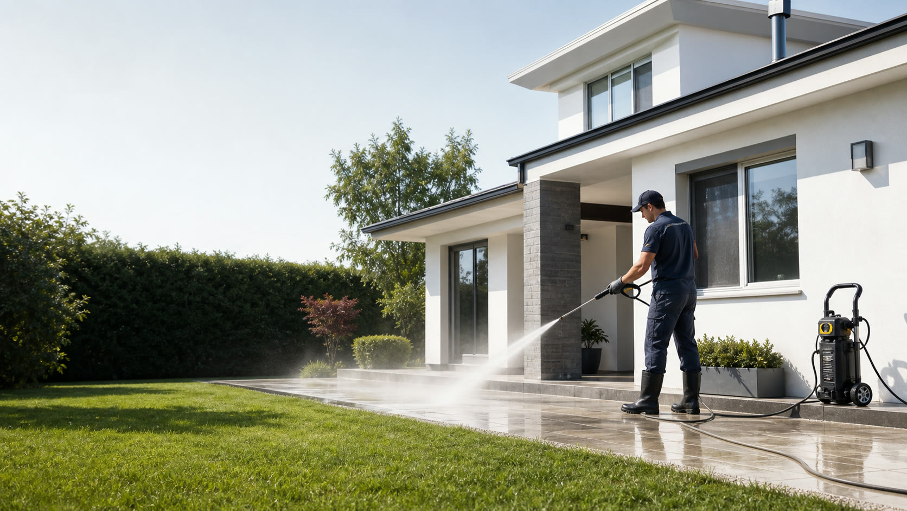
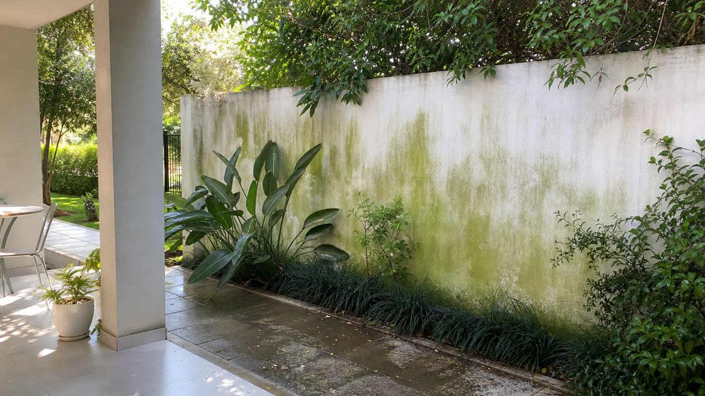
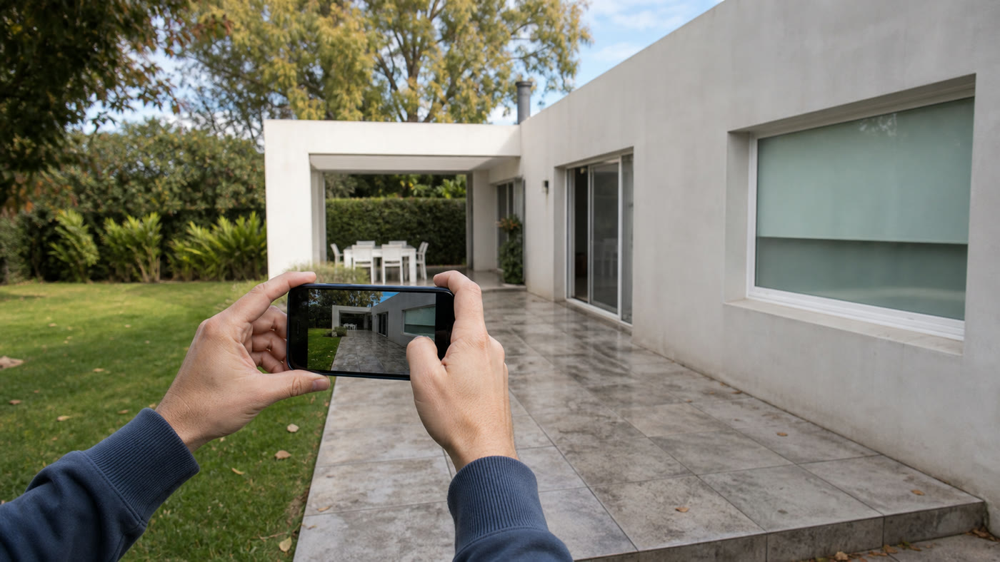
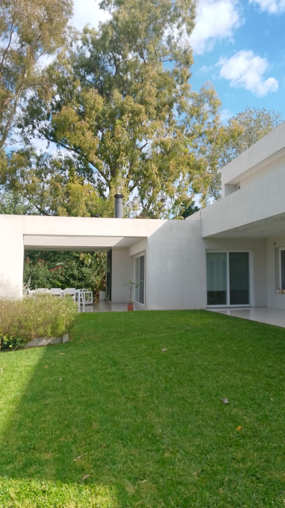

Lavado exterior profesional
Tu casa limpia, cuidada y lista para volver a lucirse.
Limpieza a presión para frentes, techos, patios, pisos exteriores y piletas. Servicio local en San Martín y alrededores con equipo propio y cotización por WhatsApp.
- 6 m
- Lanza telescópica
- 20 m
- Manguera de alcance
- 9-15 h
- Jornada habitual
Para cotizar rápido: mandá ubicación, fotos o video del área a limpiar y contanos si es frente, casa completa, techo, piso exterior o pileta.
Abrir WhatsAppServicios
Limpieza exterior con criterio para cada superficie.
El objetivo no es solo tirar agua: es elegir presión, distancia, herramienta y tiempo de trabajo según la altura, el material y el nivel de suciedad.
Frentes y fachadas
Lavado de paredes exteriores, manchas, polvo acumulado y marcas de intemperie.
Techos y tejas
Trabajo con manguera de alcance y herramientas para zonas altas, según acceso y seguridad.
Pisos exteriores
Entradas, veredas, patios y galerías con barro, verdín o marcas de uso.
Piletas y bordes
Limpieza puntual de superficies, bordes y sectores exteriores que necesitan recuperación visual.
Guías útiles
Contenido para decidir mejor antes de cotizar.
Artículos pensados para resolver dudas reales sobre precio, mantenimiento, verdín y superficies delicadas.

Precio
Cuánto cuesta lavar el frente de una casa
Variables que influyen en el presupuesto y datos que conviene enviar.
Leer guía
Verdín
Cómo limpiar verdín de paredes y patios
Por qué aparece, cuándo actuar y qué errores evitar.
Leer guía
Cotización
Qué fotos mandar para cotizar un lavado exterior
Checklist simple para recibir una respuesta más precisa.
Leer guíaProceso
De la consulta al resultado, sin vueltas.
El presupuesto se arma con datos simples y el trabajo se planifica según tamaño, altura y acceso. Si hace falta, se puede cotizar por proyecto, por jornada o por superficie.
-
01
Enviás fotos o video
Con ubicación, superficie a limpiar y nivel de urgencia.
-
02
Se define alcance
Frente, laterales, techo, pisos, pileta o casa completa.
-
03
Se coordina jornada
Equipo, manguera, escalera y lanza telescópica según el caso.
-
04
Revisión final
Se entrega el área limpia y se revisan detalles visibles.
Equipo de trabajo
Alcance para limpiar mejor, con menos montaje.
Para muchas superficies altas se puede trabajar desde el piso con lanza telescópica de 6 metros. Para techos y zonas alejadas, el servicio cuenta con manguera de 20 metros y escalera.
- Equipo propio para lavado exterior.
- Preparación del área antes de iniciar.
- Cotización ajustada por altura, acceso y superficie.

Trabajos reales
Servicio en acción, con material real.
Videos de trabajos residenciales para mostrar equipo, alcance y tipo de superficies que se pueden recuperar con limpieza exterior.
Fachada real
Lavado exterior de lateral de casa
Se ve el equipo en operación, la distancia de trabajo, la manguera y la superficie exterior. Este tipo de clip funciona bien para mostrar el servicio y generar confianza.
Pisos y acceso
Galería y techo
Cotización
Pedí presupuesto con datos claros y respuesta rápida.
Completá los datos principales y abrimos WhatsApp con el mensaje armado para acelerar la cotización.
Preguntas frecuentes
Lo que conviene definir antes de cotizar.
Cuánto tarda un trabajo?
Un frente o pileta puede resolverse en pocas horas. Una casa completa con cuatro caras, techo y pisos puede tomar dos o tres días según tamaño y acceso.
Cómo se calcula el precio?
Se calcula por proyecto, superficie, altura, acceso y tiempo estimado. Las fotos y videos ayudan a cotizar con menos margen de error.
Se puede limpiar en altura?
Sí. Para muchas paredes altas se usa lanza telescópica de 6 metros. Para techos o zonas puntuales se evalúa acceso y seguridad.
Qué zonas cubren?
La base inicial es San Martín y alrededores. Hay que confirmar localidades exactas antes de publicar campañas.